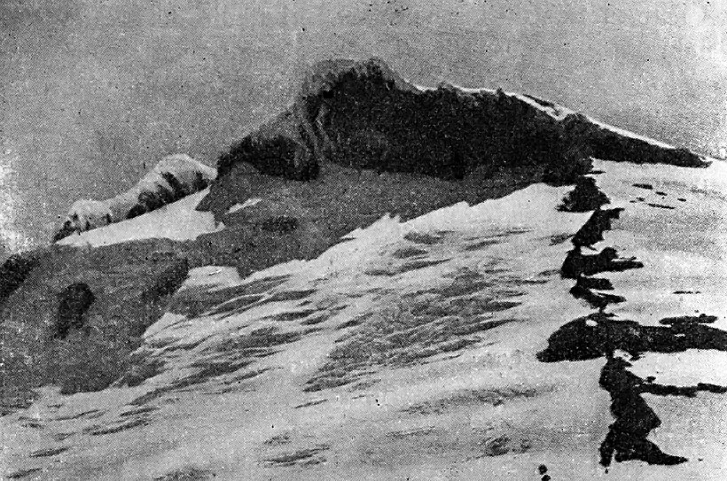
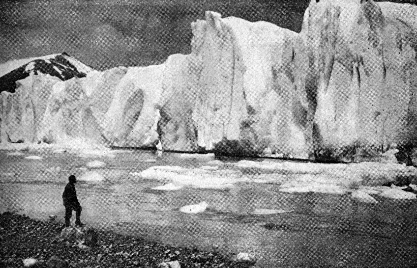

- Volver a
- Inicio
- Revista Digital
- Libros
Guía Turística de Magallanes y Canales Fueguinos
Restauración Fotográfica: Centro Cultural Argentino de Montaña, Natalia Fernández Juárez
Autor: Padre Alberto M. De Agostini
Editorial: Propiedad del autor, Punta Arenas, Chile.
Año: Primera Edición 1946
Formato: 14 x 20 cm.
Páginas: 151
Idioma: Castellano
Observaciones: Aunque trata sobre el territorio chileno, su impresión fue realizada en Buenos Aires, Argentina, en los Talleres Gráficos de la Publitipografia Isa Vicente y Cia.

Tapa de la Guía Turística de Magallanes y Canales Fueguinos. Autor: Padre Alberto M. de Agostini
Otros libros del autor
1931: Mi primera expedición al interior de la cordillera patagónica meridional (Buenos Aires, Argentina)
1934: La naturaleza en los Andes de la Patagonia Septentrional. Lagos Nahuel Huapi y Esmeralda (Torino, Italia)
1939: Aspetti geomorfologici della Cordigliera Patagonica Australe (Torino, Italia)
1941: El Cerro Lanín y sus alrededores: Parque Nacional (Torino, Italia)
1945: Paisajes magallánicos. Itinerarios turísticos. (Punta Arenas, Chile 1945) Ascensión al Monte San Lorenzo. Excursión a la región del Baker (Buenos Aires, Argentina). Guía turística de los lagos australes argentinos y Tierra del Fuego (Buenos Aires, Argentina).Andes Patagónicos, Viaje de exploración a la cordillera patagónica austral(Buenos Aires, Argentina)
1955: Treinta años en Tierra del Fuego (Buenos Aires, Argentina)
1959: Esfinges de Hielo (Torino, Italia)
1960: Don Bosco geógrafo (traducida al castellano, en Bollettino Salesiano).

Marineros ingleses de la expedición de Thomas Candish matando lobos de mar en Tierra del Fuego. Libro: Guia Turistica de Magallanes y Canales Fueguinos
El Descubrimiento del Estrecho y fundación de la primera población en el mismo por Pedro Sarmiento de Gamboa
Hernando de Magallanes, cosmógrafo y navegante portugués, al servicio de España, fue quien descubrió el Estrecho de su nombre y la Tierra del Fuego.
Salió de San Lúcar el 20 de septiembre de 1519 al mando de una flota de cinco carabelas y 237 hombres con el fin de hallar a través del continente descubierto por Colón un paso que lo llevara al codiciado país de las especias.
El 13 de diciembre tocaba la costa del Brasil y siguiendo hacia el Sur por el camino trazado, en el año 1501, por Américo Vespucio, entraba en un puerto de la costa patagónica el 31 de marzo de 1520, que denominaba San Julián, donde determinó pasar el invierno.

Monte Italia desde su vertiente austral. Libro: Guia Turistica de Magallanes y Canales Fueguinos
El 24 de agosto del mismo año, después de haber sofocado una revuelta, reanudó viaje hacia el Sur con sólo cuatro carabelas, pues la Santiago había naufragado en un reconocimiento de la costa, frente a Santa Cruz, y el 1° de noviembre, después de haber doblado una punta que llamó de las Vírgenes, por ser el día de Santa Ursula, penetraba en el Estrecho que denominó de Todos los Santos, y al que la posteridad rebautizó con el nombre de su descubridor.
Durante la travesía vio Magallanes en las tierras que se extendían al Sur del canal descubierto muchos fuegos que ardían tanto de día como de noche y llamó a aquella región Tierra del Fuego.
Sin tropiezo alguno Magallanes siguió viaje en el Estrecho y después de 22 días de navegación entró en el gran océano al que, por estar casualmente en calma, denominó Pacífico.
Ya en pleno mar libre, continuó Magallanes su viaje con ruta al Noroeste, navegó por más de tres meses en las inmensas soledades de aquellas aguas sin divisar tierra alguna, y después de horribles sufrimientos, diezmada la tripulación por la sed y el hambre, llegó a las islas Moluccas y luego a las Filipinas, pereciendo en una de éstas durante un audaz acción contra los nativos.
Entre los tempanos en el fiordo De Agostini. Libro: Guia Turistica de Magallanes y Canales Fueguinos
La Victoria, al mando de Juan Sebastián de Elcano, fue la única nave que pudo regresar a España con 18 sobrevivientes, entrando el 7 de septiembre de 1522 en San Lúcar a los tres años y catorce días de su salida, siendo así la que logró hacer el primer viaje de circunnavegación del globo.
Tras la gloriosa expedición de Magallanes siguieron otros viajes preparados en España y en las colonias de Chile y Perú que miraban a completar el conocimiento del Estrecho y tomar posesión de las nuevas tierras.
Tales son las expediciones de Fray Jofré de Loaysa (1525-1537), de Sebastián Cabot (1526-1530), de Simón de Alcazaba (1534-1535) preparadas en España, las que no dieron el resultado que se esperaba, habiendo sido frustradas sus intenciones por una larga serie de contratiempos y de penurias.
Mejor éxito tuvo la expedición de Juan Ladrillero (1557-1558) organizada por el Gobernador de Chile, García Hurtado de Mendoza, quien fue el primero en recorrer íntegramente los canales de la Patagonia occidental, descubriendo el seno de Ultima Esperanza, y llegando hasta la embocadura oriental del estrecho de Magallanes, del cual tomó posesión en nombre de España.
El pacífico dominio por España de estas nuevas tierras debía ser pronto perturbado por las famosas correrías de los corsarios ingleses que, al aporte de una pingüe ganancia por sus armadores, añadieron un conocimiento más perfecto de las tierras y mares, que recién se acababan de descubrir.

Frente al ventisquero Negri. Libro: Guia Turistica de Magallanes y Canales Fueguinos
Abrió el cicio de estas correrías el célebre corsario Francisco Drake con su expedición de 1577-1580 en la cual después de haber cruzado felizmente el Estrecho en 16 días, se lanzó al Norte a desafiar a la escuadra española, saqueando Valparaíso, apresando barcos y sembrando el espanto entre los españoles de Chile y del Perú. Volvió a Inglaterra el 3 de noviembre de 1580 por el Cabo de Buena Esperanza, después de tres años de su partida, cargado de inmensos tesoros y con la gloria de haber cumplido la segunda vuelta alrededor del mundo.
Alarmado el virrey del Perú por las depredaciones de toda clase llevadas a cabo por el corsario inglés y con el fin de destruir las colonias que suponía haber aquél fundado en el Estrecho, hizo preparar dos navíos que puso al mando del renombrado piloto Pedro Sarmiento de Gamboa.
Esta primera expedición de Sarmiento salió de El Callao el 15 de octubre de 1579 y después de haber cruzado felizmente los canales patagónicos y el estrecho de Magallanes, el 25 de marzo salía de este último con rumbo a España, llevando consigo la mejor descripción que se había hecho sobre esta región.
El rey de España, Felipe II, alentado por las halagüeñas declaraciones de Sarmiento, quien afirmaba "ser tan fácil como necesario fortificar por ambas costas la primera estrechura y poblar el Estrecho más adelante", ordenó que se equipara una poderosa escuadra de 23 navíos, que puso bajo el mando de Diego Flores de Valdés y de Sarmiento.
La escuadra salió de Sevilla el 25 de septiembre de 1581, pero fue desdichada desde los primeros días, a causa de las tormentas, defecciones y repetidos naufragios. Por fin, después de dos años y medio, cinco buques pudieron embocar el Estrecho, y a pesar de las dificultades producidas por las tempestades y fuerza de la marea, 300 personas bajaron a tierra y fundaron el 5 de febrero de 1584, la ciudad del Nombre de Jesús en un valle próximo al cabo Vírgenes.
En ese intervalo tres naves huyeron a España, quedando Sarmiento únicamente con la María, la cual prosiguió hasta punta Santa Ana, donde debía fundarse una nueva colonia: Sarmiento continuó el viaje por tierra con 700 arcabuceros.
Ventisquero de la vertiente oriental del monte Balmaceda. Libro: Guia Turistica de Magallanes y Canales Fueguinos
Huasos chilenos en las orillas del lago Nordenrkjold. Libro: Guia Turistica de Magallanes y Canales Fueguinos
El viaje fue por demás penoso, a causa de las dificultades del camino, la falta de víveres y los ataques de los indígenas; pero finalmente, cuando los soldados, ya cerca de la meta, agotados por la fatiga y el hambre, estaban para amotinarse, la vista del buque María, que iba en su ayuda tranquilizó los ánimos. Reunidos con el buque en el lugar indicado, Sarmiento fundó con las formalidades acostumbradas, el 25 de marzo de 1584. la segunda colonia, a la cual dio el nombre de Rey don Felipe. Habiéndose embarcado nuevamente para ir a visitar la primera colonia que estaba ocupada en fortificar el Estrecho, una furiosa tormenta lo obligó a salir al Atlántico; pero, como la tormenta duró más de veinte días, fue obligado a regresar a la costa del Brasil, donde la María naufragó.
Desde allí Sarmiento trató de enviar socorros a sus dos colonias, pero no le fue posible. Decidió entonces volver a España, pero en las costas del Brasil fue tomado prisionero por los corsarios ingleses, que lo llevaron a Inglaterra. Solamente cuatro años después, tras mil sufrimientos y peripecias, pudo regresar a España para pedir ayuda al rey Felipe; pero era demasiado tarde: las dos colonias del Estrecho habían dejado de existir, víctimas del hambre.
A un audaz pirata inglés, Tomás Cavendish que siguió a Drake en sus correrías y depredaciones por las costas del Pacífico, estaba reservado constatar, de paso por el Estrecho (enero de 1587), el triste epílogo de aquel primer conato de colonización, del cual quedó únicamente como triste recuerdo "Puerto Hambre", nombre que el mismo Cavendish dio a la segunda colonia del rey Felipe fundada por el desafortunado Pedro Sarmiento de Gamboa.
Lobo de mar al timón de una goleta. Libro: Guia Turistica de Magallanes y Canales Fueguinos
TURISMO EN MAGALLANES
La extraordinaria cantidad de paisajes, singularmente variados e imponentes, que ofrece la Cordillera Patagónica austral despedazada en el Occidente por una intrincada red de canales, bahías y fiordos, y en el Levante por una larga cadena de lagos, de todas las formas y dimensiones, hace de la región magallánica una de las más hermosas e interesantes de la Tierra.
No es, pues, aventurado afirmar que todo ese conjunto de belleza que adorna tan singular comarca, realzada por la lejanía y la soledad misteriosa que la envuelve, ejerce, sobre el viajero apasionado por estas grandiosas manifestaciones de la naturaleza, la más poderosa atracción.
Una nueva ruta se va, pues, abriendo al turismo en las tierras australes chilenas, ya sea en los canales de la Patagonia y Tierra del Fuego, ya en la región continental de Última Esperanza.
Es esta última, por el momento, la que presenta mejores condiciones de accesibilidad y la que, enriquecida con nuevos caminos, buenos hoteles y los medios indispensables de transporte, puede convertirse en fuente de recursos económicos y de progreso, transformándose en uno de los más atrayentes parques de turismo.
Punta Arenas, calle Roca. Libro: Guia Turistica de Magallanes y Canales Fueguinos
Museo saleciano canoas de los indios Alacalufes. Libro: Guia Turistica de Magallanes y Canales Fueguinos
Los dos macizos del Paine y del Balmaceda con sus atrevidas e imponentes cumbres, con sus majestuosos glaciares, sus encantadores lagos e inmensas selvas vírgenes, brindan al turista los más hermosos paseos y excursiones de media y alta montaña con panoramas llenos de hechizo y de encanto. Además, en todos los lagos y en los caudalosos ríos que surcan la región hay abundante pesca de truchas, pejerreyes y truchas salmonadas, lo cual proporciona al turista amplias posibilidades para dedicarse a este atrayente deporte.
Las excursiones marítimas a los canales de la Tierra del Fuego ofrecen también, con las facilidades de un viaje cómodo y confortable, gran abundancia y variedad de panoramas, pudiendo visitarse los más lejanos y solitarios fiordos y contemplar de cerca la imponente mole de las montañas, los innumerables glaciares, y cascadas en el verde marco de los bosques bajo un cielo iluminado por las más sorprendentes tonalidades.
Área Restauración Fotográfica del CCAM: Natalia Fernández Juárez
Es nuestra misión dar a conocer la Cultura de Montaña Argentina y por lo tanto es prioritario que si es utilizado nuestro material visual, acuerden con la institución su uso. Si están interesados en el material fotográfico del CCAM, le sugerimos que se contacten a: info@culturademontania.org.ar
Todo el material fotográfico del CCAM es restaurado y publicado en alta resolución.